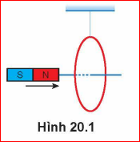
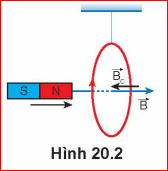
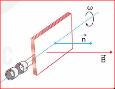
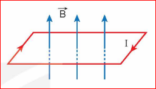
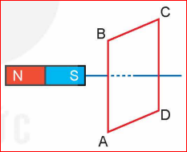
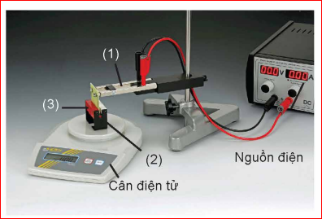

"Để giải các bài tập về từ trường thì cần dùng những kiến thức cơ bản nào?"
Phần từ trường bao gồm những nội dung chính như: mô tả từ trường, lực từ tác dụng lên đoạn dây dẫn thẳng mang dòng điện; cảm ứng điện từ; dòng điện xoay chiều; sóng điện từ.
Thường yêu cầu mô tả tính chất từ trường, xác định phương, chiều của cảm ứng từ \(\vec{B}\); xác định lực từ; chiều dòng điện cảm ứng theo định luật Lenz; mô tả sóng điện từ và giải thích các ứng dụng thực tế.
Vận dụng công thức: \(F = BIL\sin\alpha\), các công thức tính suất điện động cảm ứng \(e = -\frac{\Delta\Phi}{\Delta t}\), suất điện động máy phát điện xoay chiều, và các đại lượng hiệu dụng.
Cần kĩ năng thu thập kết quả, xử lí số liệu và phân tích đồ thị. Lưu ý việc chọn trục tọa độ và đơn vị đo lường cho phù hợp với dữ kiện thực tế.
Câu 1.
Đưa một nam châm lại gần vòng dây như Hình 20.1. Hãy xác định chiều dòng điện cảm ứng trong vòng dây và cho biết vòng dây sẽ chuyển động về phía nào?

[Hình 20.1: Nam châm tiến lại gần vòng dây treo]
Giải:

Câu 2.
Một dây dẫn dài \(10\,cm\) đặt trong từ trường đều \(B = 5 \cdot 10^{-2}\,T\). Dòng điện \(I = 10\,A\).
a) Xác định lực từ khi dây vuông góc với \(\vec{B}\).
b) Khi \(F = 0,043\,N\), tính góc giữa \(\vec{B}\) và chiều dòng điện.
Giải:
a) Độ lớn lực từ: \(F = BIL \sin 90^\circ = (5 \cdot 10^{-2}) \cdot 10 \cdot 0,1 = 0,05\,N\).
b) Ta có: \(\sin\alpha = \frac{F}{BIL} = \frac{0,043}{5 \cdot 10^{-2} \cdot 10 \cdot 0,1} \approx 0,86 \implies \alpha \approx 60^\circ\).
Câu 3.
Khung dây \(S = 20\,cm^2\), \(N = 100\) vòng, quay \(50\) vòng/s trong từ trường \(B = 0,1\,T\). Trục quay vuông góc đường sức. Tại \(t = 0\), \(\vec{n}\) cùng chiều \(\vec{B}\). Viết biểu thức từ thông và suất điện động.

Giải:
\(\omega = 50 \cdot 2\pi = 100\pi\,(rad/s)\).
a) Từ thông: \(\Phi = NBS \cos(\omega t) = 100 \cdot 0,1 \cdot (20 \cdot 10^{-4}) \cos(100\pi t) = 0,02 \cos(100\pi t)\,(Wb)\).
b) Suất điện động: \(e = \omega NBS \cos(\omega t - \pi/2) = 100\pi \cdot 0,02 \cos(100\pi t - \pi/2) \approx 6,28 \cos(100\pi t - \pi/2)\,(V)\).
Bài 1:
Đặt một khung dây dẫn hình chữ nhật có dòng điện \(I\) chạy qua trong từ trường đều, sao cho mặt phẳng khung dây vuông góc với các đường cảm ứng từ (Hình 20.4). Lực từ sẽ:

Đáp án: C Áp dụng quy tắc bàn tay trái cho từng cạnh, các lực từ sẽ có phương nằm trong mặt phẳng khung, vuông góc các cạnh và hướng vào trong (làm nén). Vì các cặp lực đối diện trực đối nên không làm khung quay.
Bài 2:
Xác định chiều dòng điện cảm ứng trong khung dây ABCD khi đưa nam châm lại gần (Hình 20.5).

Cực Nam (S) lại gần làm từ thông tăng. Mặt đối diện khung dây phải xuất hiện mặt Nam (S) để đẩy lại. Dòng điện chạy theo chiều A -> D -> C -> B -> A (chiều kim đồng hồ khi nhìn từ phía nam châm).
Bài 3:
Vòng dây \(S = 40\,cm^2\), \(B = 0,1\,T\). Mặt phẳng vòng dây hợp với \(\vec{B}\) một góc \(30^\circ\). Tính từ thông qua S.
Góc giữa pháp tuyến \(\vec{n}\) và \(\vec{B}\) là \(\theta = 90^\circ - 30^\circ = 60^\circ\).
\(\Phi = BS \cos 60^\circ = 0,1 \cdot (40 \cdot 10^{-4}) \cdot 0,5 = 2 \cdot 10^{-4}\,(Wb)\).
Bài 4: Thí nghiệm đo lực từ

Từ bảng số liệu sau, hãy tính độ lớn cảm ứng từ B:
| \(I\,(A)\) | 2,5 | 5,1 | 10,1 | 20,2 |
|---|---|---|---|---|
| \(L\,(cm)\) | 1,2 | 1,2 | 1,2 | 1,2 |
| \(F\,(N)\) | 0,008 | 0,015 | 0,030 | 0,060 |
Áp dụng \(B = \frac{F}{IL}\) cho các lần rồi tính trung bình.
Với \(B_{tb}=\frac{\frac{F_1}{I_1.L_1}+\frac{F_2}{I_2.L_2}+\frac{F_3}{I_3.L_3}+\frac{F_4}{I_4.L_4}}{4}\):
\(B_{tb} \approx 0,252\,T\).
Vận dụng kiến thức để giải các bài tập về máy phát điện, biến áp, và giải thích các hiện tượng cảm ứng điện từ trong đời sống kỹ thuật.
Câu 1 (Biết): Công thức nào sau đây xác định độ lớn lực từ tác dụng lên đoạn dây dẫn thẳng?
Câu 2 (Biết): Chiều của dòng điện cảm ứng được xác định theo:
Câu 3 (Hiểu): Nếu góc hợp bởi dây dẫn và cảm ứng từ tăng từ \(30^\circ\) lên \(60^\circ\) thì lực từ sẽ:
Bài 1: Khung dây quay trong từ trường không đều có được không? Tại sao?
Bài 2: Một thanh dẫn trượt trên hai đường ray kim loại trong từ trường đều. Tính công suất tỏa nhiệt trên thanh?